Analiza critică a materialelor de educație pentru sănătate din domeniul recuperării
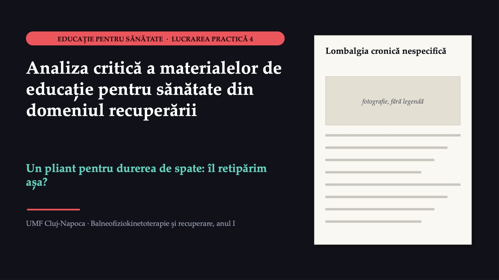
1 / 38Pliantul din sala de așteptare
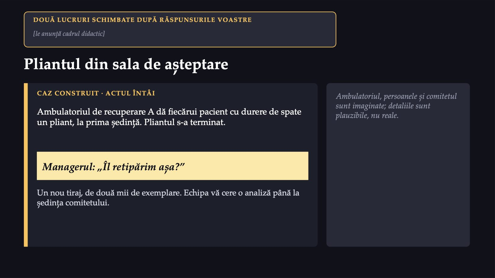
2 / 38Ce primește pacientul azi
![PLIANTUL, PRIMA EDIȚIE · FAȚA Ce primește pacientul azi VALORI IPOTETICE Lombalgia cronică nespecifică Pacientă la masaj, cu fața vizibilă, fără legendă. „Lombalgia reprezintă una dintre cele mai frecvente afecțiuni ale aparatului locomotor; 619 milioane de oameni din lume suferă de dureri de spate. Etiologia este multifactorială.” „În majoritatea cazurilor, durerea trece de la sine. Se recomandă efectuarea zilnică a programului de kinetoterapie: 30 de repetări pe zi din fiecare exercițiu, în 3 serii egale.” Pliant construit. 619 milioane: cifra reală a OMS, 2020.](diapozitive/LP04/003.jpg) 3 / 38
3 / 38Nouă exerciții, o promisiune, un telefon
![PLIANTUL, PRIMA EDIȚIE · VERSO Nouă exerciții, o promisiune, un telefon VALORI IPOTETICE • Flexia trunchiului din decubit dorsal • Extensia lombară din procubit • Basculări de bazin • Întinderea ischiogambierilor • Activarea musculaturii abdominale profunde • Rotații ale trunchiului • „Podul” • Poziția „pisică-cămilă” • Mers zilnic „Exercițiile vindecă definitiv durerea de spate în 4 săptămâni. Nerespectarea programului duce la cronicizarea definitivă a durerii.” „Pentru programări: telefonul ambulatoriului.”](diapozitive/LP04/004.jpg) 4 / 38
4 / 38Ce verificați primul, înainte de a judeca pliantul?
![MENTIMETER · VOT ACTUL 1 · DECIZIA ÎNTÂI · VOT INDIVIDUAL Ce verificați primul, înainte de a judeca pliantul? A Greșelile de ortografie și aspectul grafic B Cui se adresează, ce știu oamenii aceia, ce vrea ambulatoriul să facă ei și care este mesajul principal C Lungimea frazelor și a cuvintelor, cu o formulă de lizibilitate D Dacă pacienților le place pliantul, într-un sondaj de satisfacție Răspundeți pe telefon, la codul afișat. [codul QR Mentimeter] Vot individual, fără discuție. Rezultatele rămân ascunse.](diapozitive/LP04/005.jpg) 5 / 38
5 / 38Convingeți-l pe cel care a votat altfel
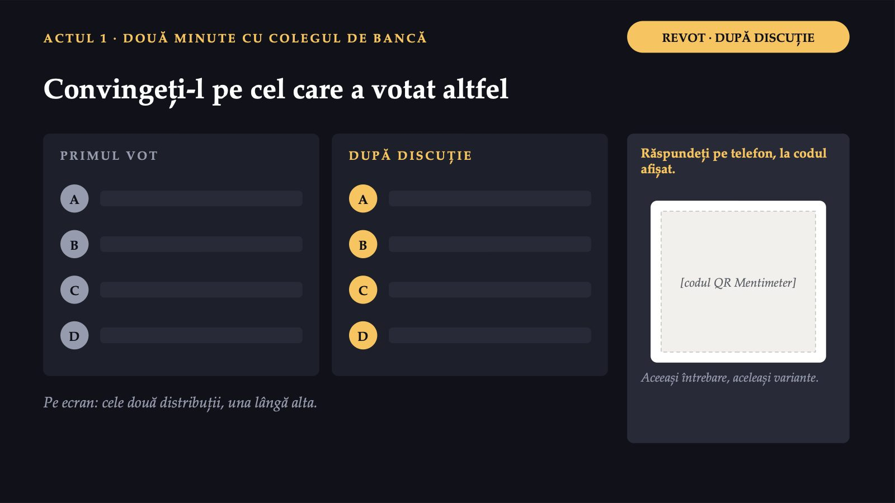
6 / 38Răspunsul apare după ședință
Răspunsul apare după ședință
Răspunsul apare după ședință
Răspunsul apare după ședință
Mesajul principal
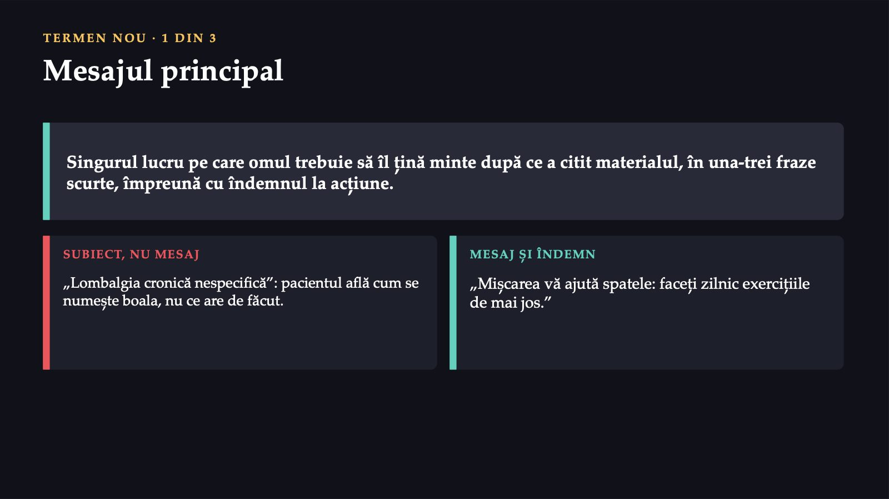
9 / 3859%
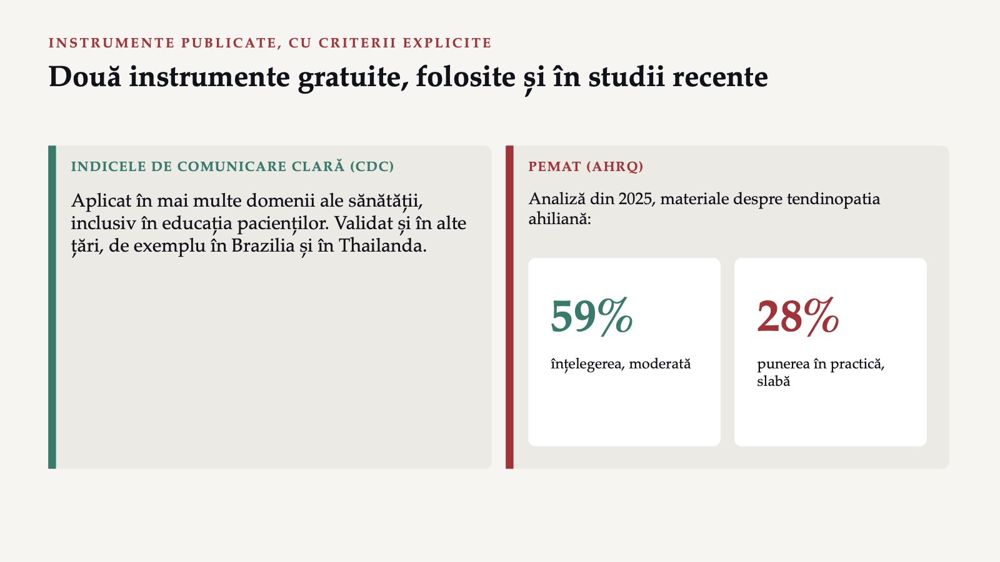
10 / 3820
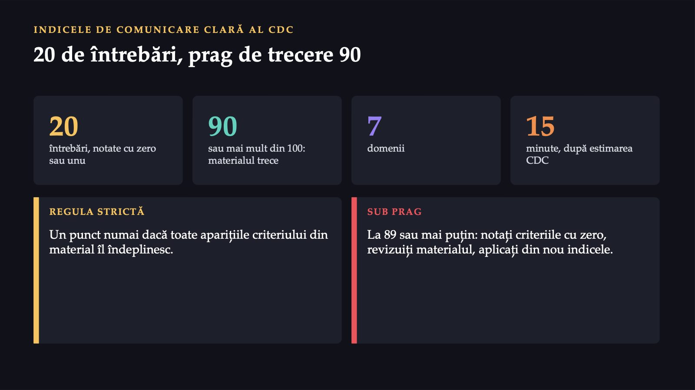
11 / 3817
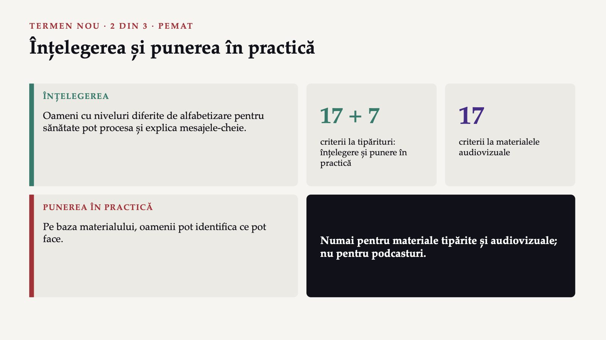
12 / 38Trei reguli și niciun prag
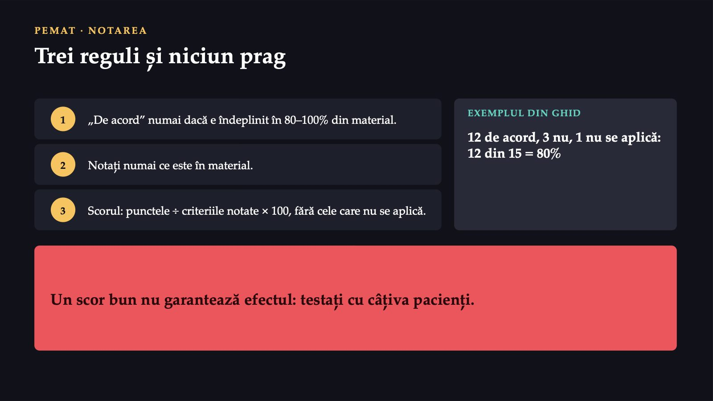
13 / 38Cinci întrebări pentru orice material
 14 / 38
14 / 38Un pliant poate fi foarte clar și greșit
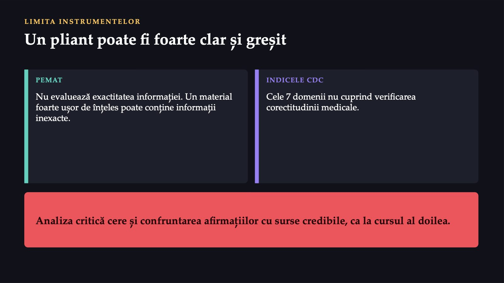
15 / 38Exercițiul în patru pași
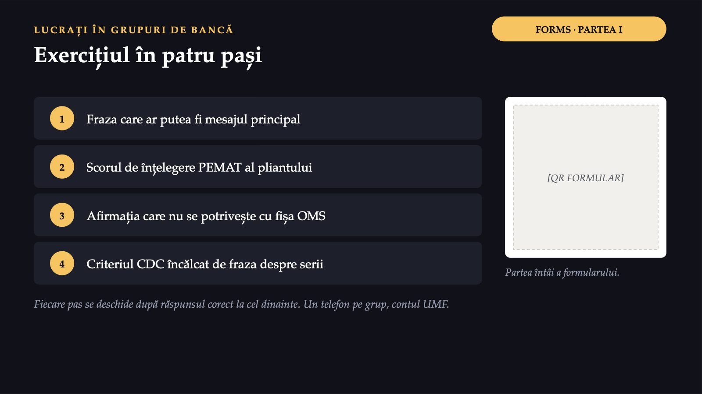
16 / 38Rezolvarea se vede în formularul fișei, după ce o predați.
Rezolvarea se vede în formularul fișei, după ce o predați.
Rezolvarea se vede în formularul fișei, după ce o predați.
Rezolvarea se vede în formularul fișei, după ce o predați.
Rezolvarea se vede în formularul fișei, după ce o predați.
Rezolvarea se vede în formularul fișei, după ce o predați.
Câte probleme sunt de formă și câte de conținut?
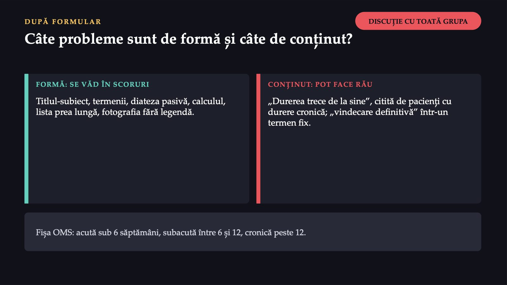
20 / 38Scorul: aproximativ 21 din 100
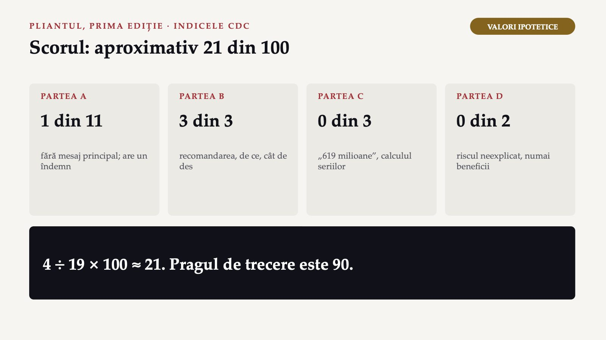
21 / 38Cinci pacienți și un termen
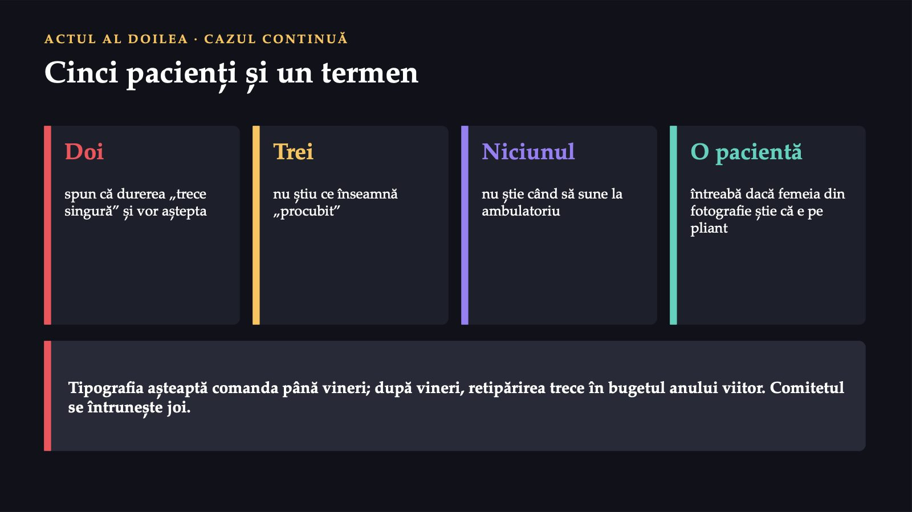
22 / 38Testarea cu pacienții
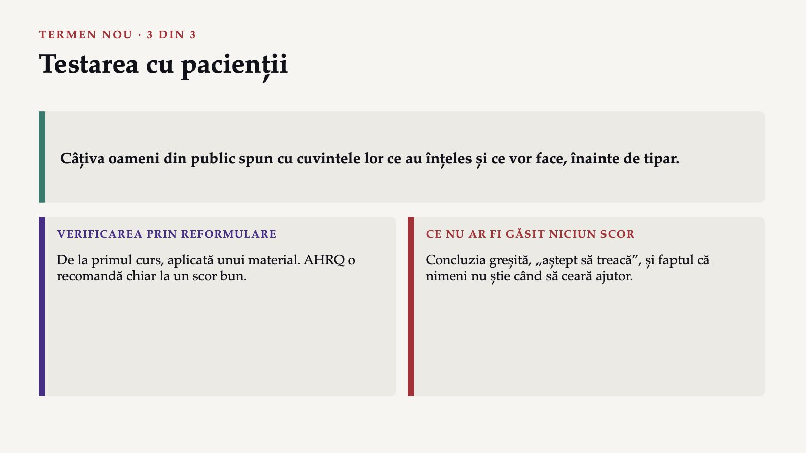
23 / 38Scanați codul rândului vostru și citiți fișa
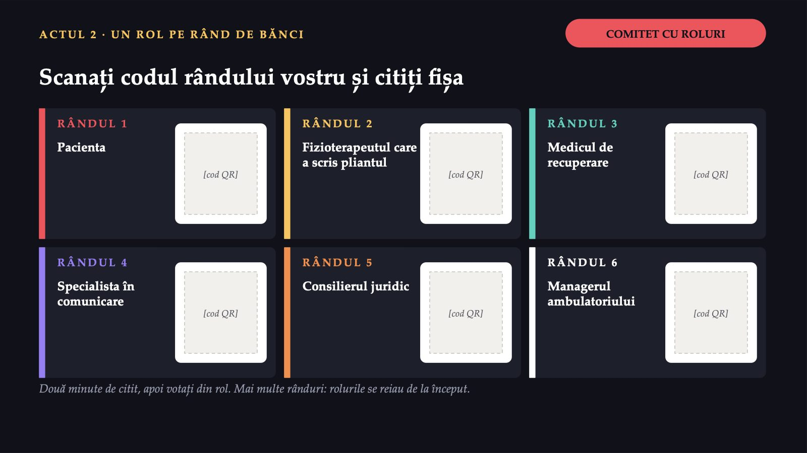
24 / 38Ce decide comitetul?
![MENTIMETER · VOT DIN ROL ACTUL 2 · DECIZIA A DOUA Ce decide comitetul? A Retipărim acum pliantul neschimbat și îl corectăm la ediția următoare, ca să nu pierdem bugetul B Retipărim după ce adăugăm ce cere medicul: anatomia, cauzele și toate exercițiile, pe patru pagini C Amânăm o săptămână: rescriem în jurul unui mesaj principal, fără promisiune și fără fotografia fără acord, cu momentul în care se sună, și testăm din nou D Renunțăm la hârtie: pe afișul din sala de așteptare, un cod QR spre un clip Răspundeți pe telefon, la codul afișat. [codul QR Mentimeter] Primul câmp: rolul vostru.](diapozitive/LP04/025.jpg) 25 / 38
25 / 38Acum fiecare cu propria părere
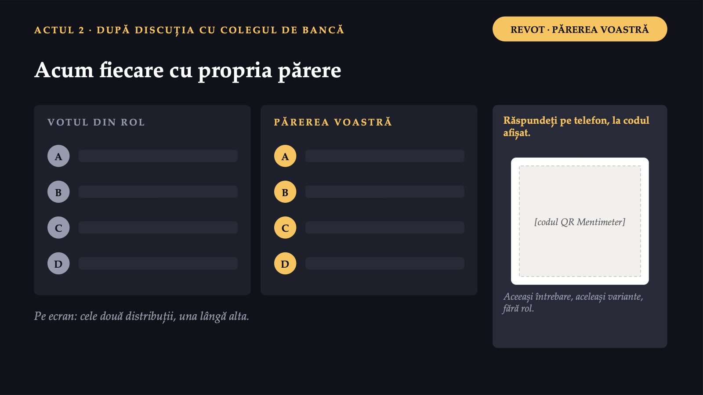
26 / 38Ce trebuie schimbat înainte de tipărire?
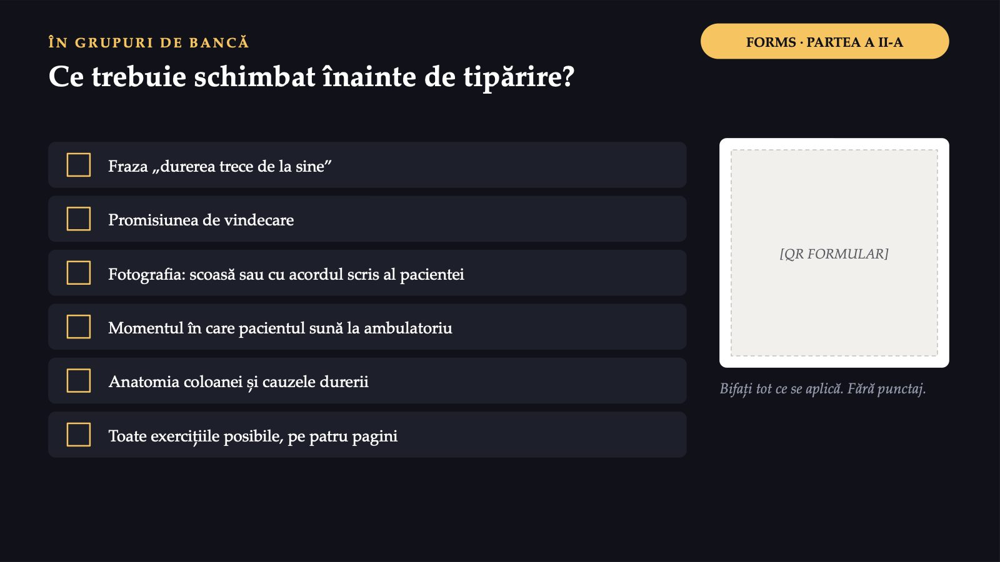
27 / 38Răspunsul apare după ședință
Răspunsul apare după ședință
Răspunsul apare după ședință
Răspunsul apare după ședință
Fotografia și promisiunea
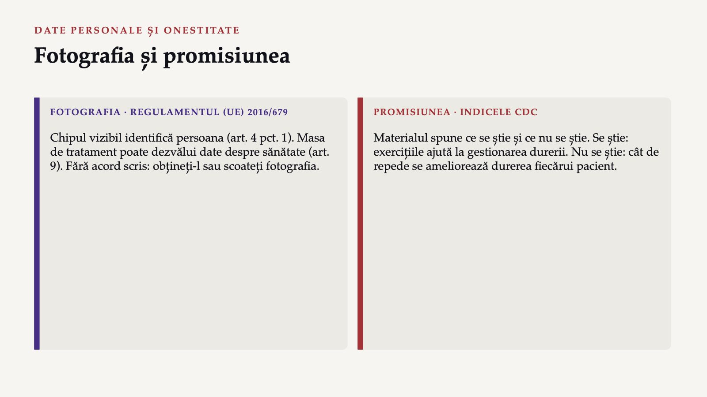
30 / 38Răspunsul apare după ședință
Răspunsul apare după ședință
Răspunsul apare după ședință
Răspunsul apare după ședință
Răspunsul apare după ședință
Răspunsul apare după ședință
Clipul: „Trei exerciții care vindecă hernia de disc pentru totdeauna”
![MENTIMETER · VOT DECIZIA A TREIA · VARIANTĂ A CAZULUI · FĂRĂ REVOT Clipul: „Trei exerciții care vindecă hernia de disc pentru totdeauna” Ce faceți întâi? Un minut, pagina unei clinici private, distribuit de mii de ori. A Îl evaluați cu PEMAT pentru materiale tipărite, ca pe pliant B Verificați cine l-a făcut, pe ce dovezi se sprijină și ce spun alte surse, apoi PEMAT audiovizual C Dacă are multe distribuiri și aprecieri, îl recomandați D Transcrieți textul și îi aplicați o formulă de lizibilitate Răspundeți pe telefon, la codul afișat. [codul QR Mentimeter] Vot individual. Un singur tur.](diapozitive/LP04/034.jpg) 34 / 38
34 / 38Răspunsul apare după ședință
Răspunsul apare după ședință
Rescrieți mesajul principal
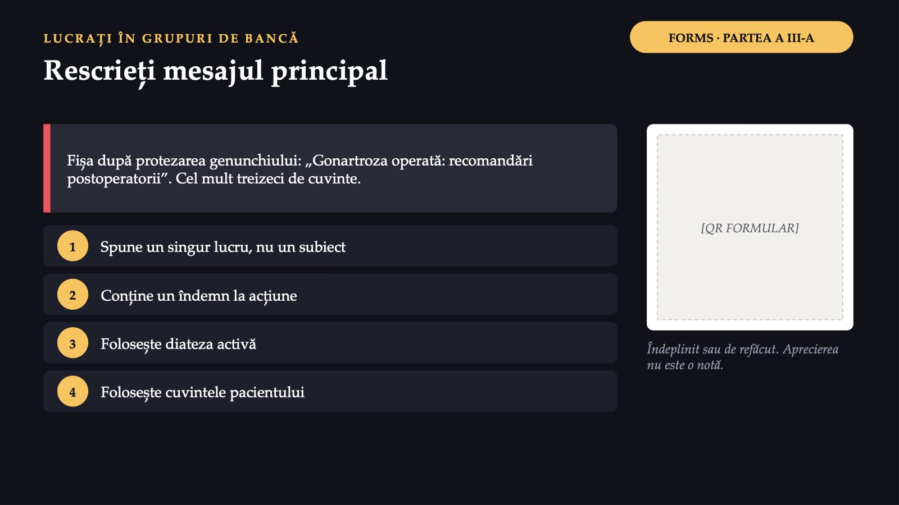
36 / 38Rezolvarea se vede în formularul fișei, după ce o predați.
Rezolvarea se vede în formularul fișei, după ce o predați.
Ce a fost util?
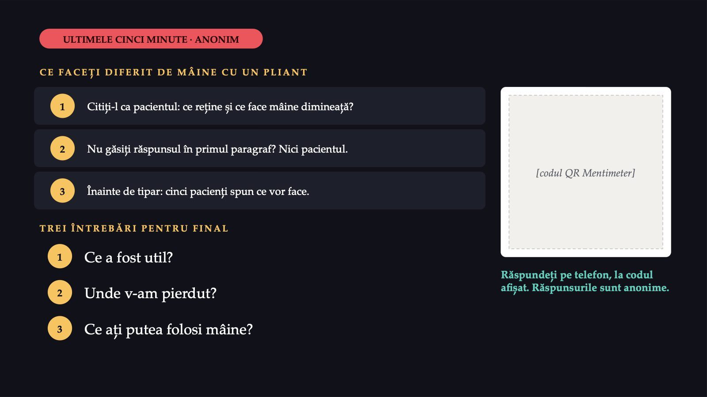
38 / 38Săgeți sau spațiu: navigare · O: vedere de ansamblu · N: notele prezentatorului · F: ecran complet · Esc: închidere